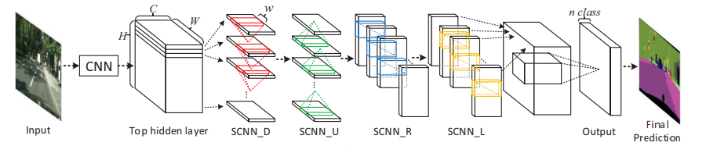

Standard CNNs build receptive field only by stacking layers, so information between two spatially distant but related pixels (e.g. a lane occluded by a car in the middle) only mixes indirectly, many layers later, once receptive fields happen to overlap. This is a poor fit for lane markings, which have a long, thin, continuous shape but weak/occluded appearance cues. Prior fixes for propagating context within a layer (RNNs scanning rows/columns, MRF/CRF with dense pairwise connections) either only mix in one direction, or connect every pixel to every other pixel directly, which is computationally very expensive.
SCNN instead propagates information sequentially, one row (or column) at a time. Take the topmost row of the feature map, convolve it with a small kernel to produce a "message," and add that message onto the row directly below it. Convolve this now-updated row to produce the next message, add it to the row below that, and repeat all the way down. This single sweep is called the downward pass. The same mechanism is then repeated for three more sweeps: upward (bottom row to top), rightward (leftmost column to rightmost), and leftward, each one run one after another, so that by the end every pixel has received context propagated in from all four directions. This module is inserted after the last hidden layer of a VGG16/LargeFOV segmentation backbone, followed by a 1x1 conv mapping features to per-pixel class scores (background plus a fixed number of lane slots), bilinear upsampling to the original image resolution, and a softmax to produce the final per-pixel lane segmentation mask. This output is a dense pixel mask rather than clean lane curves, so post-processing (thresholding, sparse point sampling, and curve fitting) is still required afterward to convert the mask into continuous lane lines.
Assumptions:
- Lane markings have a long, continuous shape prior: context needed to reconstruct an occluded/faint segment lies along the lane's own extent (rows/columns), not scattered arbitrarily.
- Local, incremental propagation (row → next row, column → next column) is sufficient, instead of connecting every pixel to every other pixel directly (as in dense MRF/CRF).
- The predicted per-lane pixel mask is clean and separable enough that post-processing (thresholding, sparse sampling, curve fitting) can produce an accurate lane line, with no major noise, gaps, or overlap between adjacent masks.
- The order of the four directional passes (down, up, right, left) matters, since each pass updates the feature map before the next one runs on it. The paper only tests adding directions one at a time; it doesn't test other orderings.

Figure: SCNN Algorithm [1].